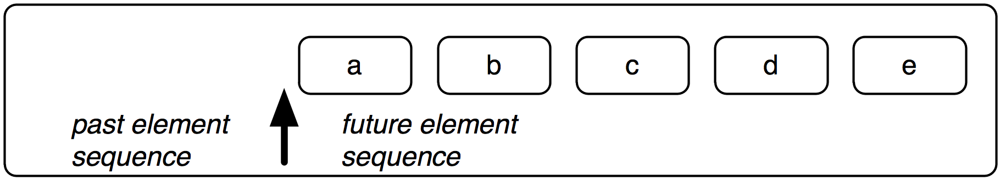
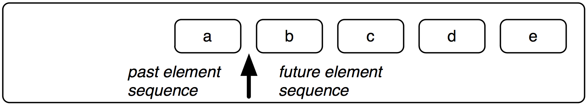
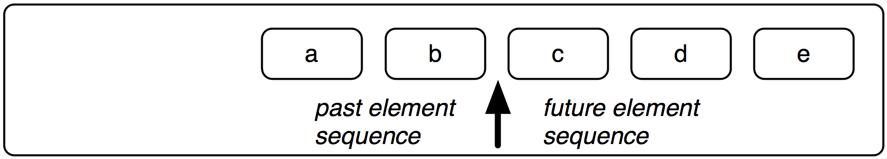
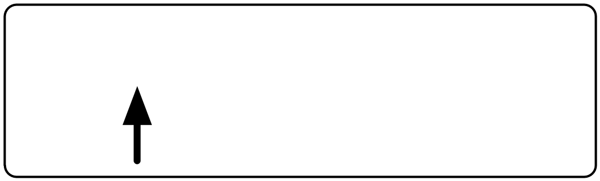
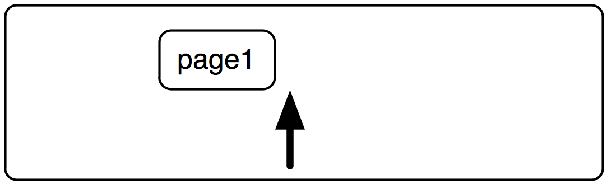
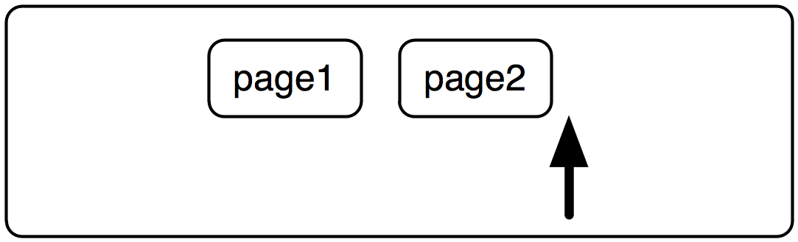
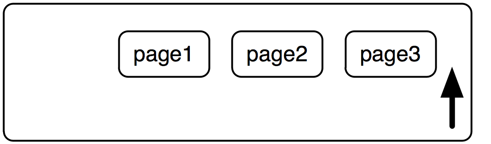
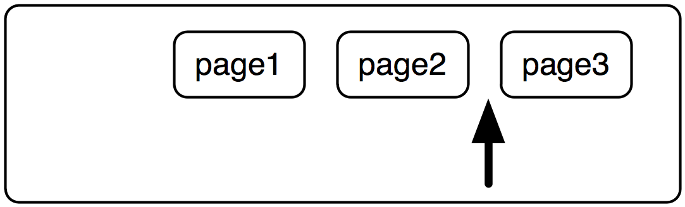
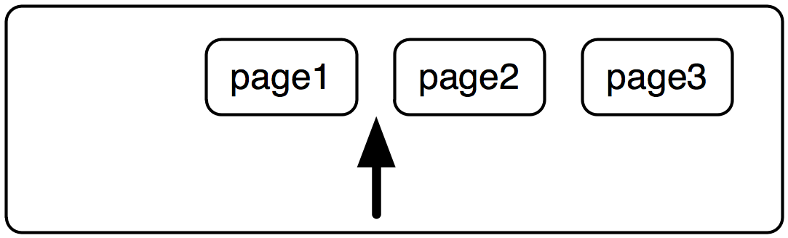
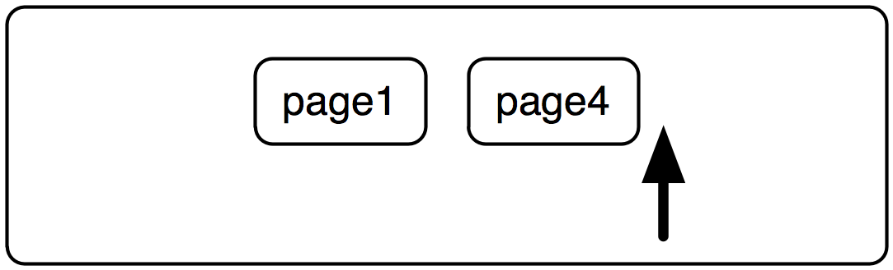

15 Streams
Streams are used to iterate over sequences of elements such as sequenced collections, files, and network streams. Streams may be either readable, or writeable, or both. Reading or writing is always relative to the current position in the stream. Streams can easily be converted to collections, and vice versa.
15.1 Two sequences of elements
A good metaphor to understand a stream is the following.
A stream can be represented as two sequences of elements: a past element sequence and a future
element sequence. The stream is positioned between the two sequences.
Understanding this model is important, since all stream operations in Pharo
rely on it. For this reason, most of the Stream classes are subclasses of
PositionableStream. Figure 15.1 presents a stream which contains
five characters. This stream is in its original position, i.e., there is no
element in the past. You can go back to this position sending the message
reset to your stream instance.

Reading an element conceptually means removing the first element of the future
element sequence and putting it after the last element in the past element
sequence. After having read one element using the message next, the state of
your stream is that shown in Figure 15.2.
next: the character a is in the past whereas b, c, d and e are in the future.
Writing an element means replacing the first element of the future sequence by
the new one and moving it to the past. Figure 15.3 shows the state of
the same stream after having written an x using the message
nextPut: anElement.
x.
15.2 Streams vs. collections
The collection protocol supports the storage, removal and enumeration of the
elements of a collection, but does not allow these operations to be
intermingled. For example, if the elements of an OrderedCollection are
processed by a do: method, it is not possible to add or
remove elements from inside the do: block. Nor does the collection protocol
offer ways to iterate over two collections at the same time, choosing which
collection goes forward and which does not. Procedures like these require that a
traversal index or position reference is maintained outside of the collection
itself: this is exactly the role of ReadStream, WriteStream and
ReadWriteStream.
These three classes are defined to stream over some collection. For example, the following snippet creates a stream on an interval, then it reads two elements.
| r |
r := ReadStream on: (1 to: 1000).
r next.
>>> 1r next.
>>> 2r atEnd.
>>> falseWriteStreams can write data to the collection:
| w |
w := WriteStream on: (String new: 5).
w nextPut: $a.
w nextPut: $b.
w contents.
>>> 'ab'It is also possible to create ReadWriteStreams that support both the reading
and writing protocols.
The following sections present the protocols in more depth.
15.3 Favor APIs
This is important that you focus on the APIs (set of messages) that stream classes offer
and not just on the class names. Why? Because Pharo may offer alternate implementations or even specialized streams to handle other encodings such as binary formats. Such implementations while named differently or even not heriting from such the core classes
will offer the same APIs. Finally in the code snippets of this chapter, we often refer to the classes to create stream instances.
Now in real code we tend to prefer to send messages to collection instances such as readStream to create a stream on the collection
because it makes the code more generic.
In this chapter we present general stream messages and often mention the root class where the method is defined. Note, however, that knowing the exact class is not that important because subclasses or other classes exposing the same APIs can execute their own methods in response to the messages.
Streams are really useful when dealing with collections of elements, and can be used for reading and writing those elements. We will now explore the stream features for collections.
15.4 Reading collections
Using a stream to read a collection essentially provides you a pointer into the
collection. That pointer will move forward on reading, and you can place it
wherever you want. Instances of the class ReadStream should be used to read elements
from collections.
Messages next and next: are used to retrieve
one or more elements from the collection.
| stream |
stream := ReadStream on: #(1 (a b c) false).
stream next.
>>> 1stream next.
>>> #(#a #b #c)stream next.
>>> false| stream |
stream := ReadStream on: 'abcdef'.
stream next: 0.
>>> ''stream next: 1.
>>> 'a'stream next: 3.
>>> 'bcd'stream next: 2.
>>> 'ef'15.5 Peek
The message peek is used when you want to
know what is the next element in the stream without going forward.
| stream negative number |
stream := ReadStream on: '-143'.
"look at the first element without consuming it."
negative := (stream peek = $-).
negative.
>>> true"ignores the minus character"
negative ifTrue: [ stream next ].
number := stream upToEnd.
number.
>>> '143'This code sets the boolean variable negative according to the sign of the
number in the stream, and number to its absolute value. The message
upToEnd (defined in ReadStream) returns everything from the current
position to the end of the stream and sets the stream to its end. This code can
be simplified using the message peekFor:,
which moves forward if the following element equals the parameter and doesn't
move otherwise.
| stream |
stream := '-143' readStream.
(stream peekFor: $-).
>>> truestream upToEnd
>>> '143'peekFor: also returns a boolean indicating if the parameter equals the
element.
You might have noticed a new way of constructing a stream in the above example:
one can simply send the message readStream to a sequenceable
collection (such as a String) to get a reading stream on that particular
collection.
15.6 Positioning to an index
There are messages to position the stream pointer. If you have the index, you
can go directly to it using position: (defined in PositionableStream). You
can request the current position using position. Please remember that a
stream is not positioned on an element, but between two elements. The index
corresponding to the beginning of the stream is 0.
You can obtain the state of the stream depicted in 15.4 with the following code:
| stream |
stream := 'abcde' readStream.
stream position: 2.
stream peek
>>> $c
To position the stream at the beginning or the end, you can use the message
reset or setToEnd.
15.7 Skipping elements
The messages skip: and skipTo: are used to go
forward to a location relative to the current position: skip: accepts a
number as argument and skips that number of elements whereas skipTo: skips
all elements in the stream until it finds an element equal to its parameter.
Note that it positions the stream after the matched element.
| stream |
stream := 'abcdef' readStream.
stream next
>>> $aThe stream is now positioned just after the $a.
stream skip: 3.
stream position
>>> 4The stream is now after the $d.
stream skip: -2.
stream position
>>> 2The stream is now after the $b.
stream reset.
stream position
>>> 0stream skipTo: $e.
stream next.
>>> $fSkipping up to an element positions the stream just after this element.
Here the stream is just after the $e.
stream contents.
>>> 'abcdef'The message contents always returns a copy of the entire stream.
15.8 Predicates
Some messages allow you to test the state of the current stream:
atEnd returns true if and only if no more elements can be read, whereas
isEmpty returns true if and only if there are no elements at all in the
collection.
Here is a possible implementation of an algorithm using atEnd that takes two
sorted collections as parameters and merges those collections into another
sorted collection:
| stream1 stream2 result |
stream1 := #(1 4 9 11 12 13) readStream.
stream2 := #(1 2 3 4 5 10 13 14 15) readStream.
"The variable result will contain the sorted collection."
result := OrderedCollection new.
[ stream1 atEnd not & stream2 atEnd not ]
whileTrue: [
stream1 peek < stream2 peek
"Remove the smallest element from either stream and add it to the result."
ifTrue: [ result add: stream1 next ]
ifFalse: [ result add: stream2 next ] ].
"One of the two streams might not be at its end. Copy whatever remains."
result
addAll: stream1 upToEnd;
addAll: stream2 upToEnd.
result.
>>> an OrderedCollection(1 1 2 3 4 4 5 9 10 11 12 13 13 14 15)15.9 Writing to collections
We have already seen how to read a collection by iterating over its elements
using a ReadStream. We'll now learn how to create collections using
WriteStreams.
WriteStreams are useful for appending a lot of data to a collection at
various locations. They are often used to construct strings that are based on
static and dynamic parts, as in this example:
| stream |
stream := String new writeStream.
stream
nextPutAll: 'This image contains: ';
print: Smalltalk globals allClasses size;
nextPutAll: ' classes.';
cr;
nextPutAll: 'This is really a lot.'.
stream contents.
>>> 'This image contains: XXX classes.
This is really a lot.'This technique is used in the different implementations of the method
printOn:, for example.
When you are only interested in the content of the stream, the message streamContents:
is a simpler and more efficient way of creating strings :
| string |
string := String streamContents:
[ :stream |
stream
print: #(1 2 3);
space;
nextPutAll: 'size';
space;
nextPut: $=;
space;
print: 3. ].
string.
>>> '#(1 2 3) size = 3'The message streamContents: sent to a collection class (here String) creates a collection and a stream on an instance of that class for you.
It then executes the block you gave passing the stream as a parameter.
When the block ends, streamContents: returns the contents of the collection.
The following WriteStream methods are especially useful in this context:
nextPut:
adds the parameter to the stream;
nextPutAll:
adds each element of the collection, passed as a parameter, to the stream;
print:
adds the textual representation of the parameter to the stream.
There are also convenient messages for printing useful characters to a stream,
such as space, tab and cr (carriage return). Another useful method
is ensureASpace which ensures that the last character in the stream is a
space; if the last character isn't a space it adds one.
15.10 About string concatenation
Using nextPut: and nextPutAll: on a WriteStream is often the best
way to add characters to a string. Using the comma concatenation operator (,) is
far less efficient as shown by the two following performing the same task.
[| temp |
temp := String new.
(1 to: 100000)
do: [:i | temp := temp, i asString, ' ' ] ] timeToRun
>>> 0:00:01:54.758[| temp |
temp := WriteStream on: String new.
(1 to: 100000)
do: [:i | temp nextPutAll: i asString; space ].
temp contents ] timeToRun
>>> 0:00:00:00.024Using a stream can be much more efficient than using a comma because the last one creates a new string containing the concatenation of the receiver and the argument, so it must copy both of them. When you repeatedly concatenate onto the same receiver, it gets longer and longer each time, so that the number of characters that must be copied goes up exponentially. Such concatenation of strings also creates a lot of garbage, which must be collected. Using a stream instead of string concatenation is a well-known optimization.
In fact, you can use the message streamContents: defined in
SequenceableCollection class (mentioned earlier) to help you do this:
String streamContents: [ :tempStream |
(1 to: 100000)
do: [:i | tempStream nextPutAll: i asString; space ] ]15.11 About printString
Let us take a moment to step back about stream usage in printOn: methods.
Basically the Object>>printString method creates a stream and passes this stream as argument of the printOn: method as shown below:
Object >> printString
"Answer a String whose characters are a description of the receiver.
If you want to print without a character limit, use fullPrintString."
^ self printStringLimitedTo: 50000Object >> printStringLimitedTo: limit
"Answer a String whose characters are a description of the receiver.
If you want to print without a character limit, use fullPrintString."
^self printStringLimitedTo: limit using: [:s | self printOn: s]Object >> printStringLimitedTo: limit using: printBlock
"Answer a String whose characters are a description of the receiver
produced by given printBlock. It ensures the result will be not bigger than given limit"
| limitedString |
limitedString := String streamContents: printBlock limitedTo: limit.
limitedString size < limit ifTrue: [^ limitedString].
^ limitedString , '...etc...'What you should see is that the method printStringLimitedTo:using: is creating a stream and passing it around.
When you redefine the method printOn: in your class, if you send the message printString on the instance variables of your object, you are in fact creating yet another stream and copying its contents in the first one.
Here is an example:
MessageTally >> displayStringOn: aStream
self displayIdentifierOn: aStream.
aStream
nextPutAll: ' (';
nextPutAll: self tally printString;
nextPutAll: ')'Here the expression self tally printString invoked the same mechanism and create an extra stream instead of using the previous one.
This is clearly counter productive.
It is much better to send the message print: to the stream or printOn: to the instance variable it as follows:
MessageTally >> displayStringOn: aStream
self displayIdentifierOn: aStream.
aStream
nextPutAll: ' (';
print: self tally;
nextPutAll: ')'In this variant, the first created stream is used, there is no creation of an extra stream.
To understand what the method print:, here its definition:
Stream >> print: anObject
"Have anObject print itself on the receiver."
anObject printOn: selfAnother example
This superfluous stream creation is not limited to printString logic.
Here is an example taken from Pharo (knowing the exact class is not important) that exhibits exactly the same problem.
printProtocol: protocol sourceCode: sourceCode
^ String streamContents: [ :stream |
stream
nextPutAll: '"protocol: ';
nextPutAll: protocol printString;
nextPut: $"; cr; cr;
nextPutAll: sourceCode ] What you should see is that a stream is created and then another stream is created and discarded with the expression protocol printString.
A better implementation is the following one:
printProtocol: protocol sourceCode: sourceCode
^ String streamContents: [ :stream |
stream
nextPutAll: '"protocol: ';
print: protocol;
nextPut: $"; cr; cr;
nextPutAll: sourceCode ] 15.12 Reading and writing at the same time
It's possible to use a stream to access a collection for reading and writing at
the same time. Imagine you want to create a History class which will manage
backward and forward buttons in a web browser. A history reacts as in
Figures 15.5 to 15.11.







This behaviour can be implemented using a ReadWriteStream.
Object subclass: #History
instanceVariableNames: 'stream'
classVariableNames: ''
package: 'PBE-Streams'
History >> initialize
super initialize.
stream := ReadWriteStream on: Array newNothing really difficult here, we define a new class which contains a stream.
The stream is created during the initialize method.
We need methods to go backward and forward:
History >> goBackward
self canGoBackward
ifFalse: [ self error: 'Already on the first element' ].
stream skip: -2.
^ stream next.
History >> goForward
self canGoForward
ifFalse: [ self error: 'Already on the last element' ].
^ stream nextUp to this point, the code is pretty straightforward. Next, we have to deal with
the goTo: method which should be activated when the user clicks on a link. A
possible implementation is:
History >> goTo: aPage
stream nextPut: aPageThis version is incomplete however. This is because when the user clicks on the
link, there should be no more future pages to go to, i.e., the forward
button must be deactivated. To do this, the simplest solution is to write
nil just after, to indicate that history is at the end:
History >> goTo: anObject
stream nextPut: anObject.
stream nextPut: nil.
stream backNow, only methods canGoBackward and canGoForward remain to be
implemented.
A stream is always positioned between two elements. To go backward, there must be two pages before the current position: one page is the current page, and the other one is the page we want to go to.
History >> canGoBackward
^ stream position > 1
History >> canGoForward
^ stream atEnd not and: [stream peek notNil ]Let us add a method to peek at the contents of the stream:
History >> contents
^ stream contentsAnd the history works as advertised:
History new
goTo: #page1;
goTo: #page2;
goTo: #page3;
goBackward;
goBackward;
goTo: #page4;
contents
>>> #(#page1 #page4 nil nil)15.13 Chapter summary
Compared to collections, streams offer a better way to incrementally read and write a sequence of elements. There are easy ways to convert back and forth between streams and collections.
- Streams may be either readable, writeable or both readable and writeable.
- To convert a collection to a stream, define a stream on a collection, e.g.,
ReadStream on: (1 to: 1000), or send the messagesreadStream, etc. to the collection. - To convert a stream to a collection, send the message
contents. - To concatenate large collections, instead of using the comma operator, it is more efficient to create a stream, append the collections to the stream with
nextPutAll:, and extract the result by sendingcontents.